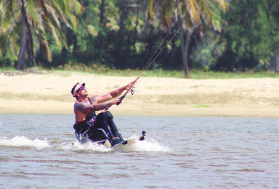

PRÁTICAS CORPORAIS
DE AVENTURA
Iniciando a busca
Ao trabalhar com essa unidade temática, espera-se que os alunos desenvolvam as seguintes habilidades e competências:
• (EF67EF18) Experimentar e fruir diferentes práticas corporais de aventura urbanas, valorizando a própria segurança e integridade física, bem como as dos demais.
• (EF67EF19) Identificar os riscos durante a realização de práticas corporais de aventura urbanas e planejar estratégias para sua superação.
• (EF67EF20) Executar práticas corporais de aventura urbanas, respeitando o patrimônio público e utilizando alternativas para a prática segura em diversos espaços.
• (EF67EF21) Identificar a origem das práticas corporais de aventura e as possibilidades de recriá-las, reconhecendo as características (instrumentos, equipamentos de segurança, indumentária, organização) e seus tipos de práticas.
• Competências específicas: 1, 2, 6, 7, 8, 10
• Competências gerais: 3, 4, 7, 8, 9, 10
• Competências de linguagens: 1, 2, 3, 4 5
As práticas corporais de aventura são atividades novas na cultura corporal de movimento, pois se difundiram e ganharam muitos adeptos apenas a partir da década de 1990, especialmente devido à ampla divul-gação pela mídia, à oferta como atividade de lazer e turismo na natureza e à expansão globalizada do comércio em torno deles. A busca da diversão, lazer e aprendizagem com estas atividades pode ser uma alternativa para práticas já cristalizadas na cultura corporal de movimento.
Com o objetivo de trazer essas práticas para serem vivenciadas na escola, a BNCC afirma que,
na unidade temática Práticas corporais de aventura, exploram-se expressões e formas de experimentação corporal centradas nas perícias e proezas provocadas pelas situações de imprevisibilidade que se apresentam quando o praticante interage com um ambiente desafiador.
Algumas dessas práticas costumam receber outras denominações, como esportes de risco, esportes alternativos e esportes extremos. Assim como as demais práticas, elas são objeto também de diferentes classificações, conforme o critério que se utilize. Neste documento, optou-se por dife-renciá-las com base no ambiente de que necessitam para ser realizadas: na natureza e urbanas. (2017, p. 216 e 217).
Dessa forma, os alunos devem conhecer a cultura corporal de movimento e suas múltiplas possibilidades de abordagem, aumentando, assim, seus entendimentos, obtendo novas experiências de leitura de mundo e
EDUCAÇÃO FÍSICA 80
outras formas de experimentação de práticas para uma futura adesão em sua vida adulta e em momentos de lazer. Nesse sentido, a BNCC propõe a vivência de práticas corporais urbanas e de aventura. Há modalidades radicais praticadas predominantemente no ambiente urbano, como o skate, o parkour, os patins e a escalada indoor (em paredes artificiais), enquanto outras usam preferencialmente os espaços naturais, como o surfe, o mountain bike, a canoagem e a escalada em rocha.
Veja o vídeo mostrando a experiência de Fernando Fernandes no kitesurfe. Disponível em: https://tinyurl. com/y9yo7gv3. Acesso em: 29 abr. 2022.
Leitura complementar
Ele é sem limites
Fernando Fernandes perdeu o movimento das pernas e da região lombar ao sofrer um acidente de carro. Ainda na reabilitação, ele conheceu a paracanoagem e decidiu se tornar um dos melhores do mundo. E conseguiu: Fernando ganhou 4 competições mundiais consecutivas e hoje faz parte da história desse esporte. Agora, ele busca uma sensação nova e encontrou o que buscava no kitesurfe, esporte que aprende desde novembro do ano passado. E sim, ele já está velejando. Fernando Fernandes é o primeiro cadeirante, com esse tipo de lesão, a velejar de kitesurfe. […]

Fernando Fernandes velejando de kitesurfe. Ceará, 2018.
Gisa de Paula / opovo
NUAZ, Giselle. Ele é sem limites. O Povo, 8 abril 2018. Disponível em: http://blogs.opovo. com.br/vidasaovento/2018/04/08/ele-e-sem-limites/. Acesso em: 9 out. 2018. (Adaptado).
Corpo em ação
Práticas corporais de aventura urbanas
O espaço urbano mudou e, assim, modificou a forma como o indivíduo lida com ele. Nesse contexto, a prática corporal também se adapta às condições desses locais, e algumas modalidades de esportes dão novo significado às ruas, praças, parques e ginásios esportivos das cidades.
As práticas corporais de aventura urbana atuam, no contexto do ambiente escolar e do seu entorno, com o objetivo de identificar, explorar e
EDUCAÇÃO FÍSICA 81
avaliar os locais disponíveis na comunidade para a realização de diferentes práticas corporais, respeitando o patrimônio público e minimizando os impactos da degradação ambiental.
Escalada indoor, 2017.
S.I / Pxhere

Pista de skate. Almirante Tamandaré, PR, 2014.
Eloy Olindo S / wikimedia.commons
Ao traçar relações com meio ambiente, os alunos têm a oportunidade de refletir e analisar os impactos das atividades humanas sobre as paisagens urbanas e o quanto isso afeta a comunidade.
As práticas corporais de aventura urbanas têm como um de seus objetivos a ocupação dos espaços públicos, dando-lhes novos usos e novas possibilidades de interação social. Diante disso, é muito importante trabalhar o respeito ao patrimônio, buscando o cuidado, o zelo e as formas de melhoria. Juntamente com os alunos, identifique, explore e avalie os locais disponíveis na escola e na comunidade para a realização de diferentes práticas corporais de aventura urbanas.
Primeiramente, organize uma roda de conversa e dialogue com a turma a respeito do que conhecem sobre práticas corporais de aventura urbanas.
Heptagon / wikimedia.common
Parkour: movimentos padrões e criatividade para encontrar obstáculos novos e desafiadores em cada nova sessão. Frankfurt, Alemanha, 2015.
Parkour
Criado na década de 1990, o parkour ou le parkour é uma modalidade de esporte urbano. A palavra origina-se do francês, que significa “o percurso”, prática de deslocar-se de um ponto para o outro rapidamente, usando técnicas para saltar obstáculos como rampas, escadas, muros, corrimãos, calçadas, árvores ou qualquer lugar onde se possa escalar e explorar apenas os recursos do corpo, de modo ágil.
EDUCAÇÃO FÍSICA 82
No Brasil, a modalidade ficou conhecida por volta de 2004, quando os praticantes foram se adaptando ao estilo e formando grupos que a cada dia, naturalmente, recrutavam mais adeptos à modalidade, praticada em parques, praças e locais que tenham obstáculos. Parkour é mais do que apenas saltar e fazer cambalhotas, é passar do ponto A para o ponto B da maneira mais eficiente e rápida possível.
Com essa prática atividade é possível desenvolver tanto capacidades físicas, como força, equilíbrio e resistência, quanto capacidades mentais, entre elas a determinação, concentração e autonomia. O circuito de parkour tem o objetivo de difundir a modalidade para o público, apresentando suas principais técnicas para iniciantes. Observe o infográfico nas páginas seguintes e descubra mais a respeito dessa prática corporal.
Organizando a atividade
Materiais necessários: obstáculos diversos, como bancos, caixotes, cordas, etc.
Número de aulas estimado: 2
Objetivo: experimentar e fruir a prática corporal de aventura parkour, valorizando a própria segurança e a dos colegas, planejando estratégias para superar desafios.
O ambiente escolar, com suas áreas de lazer e esportes, rampas e escadas, costuma oferecer o cenário perfeito para a prática do parkour, diversificando os tipos de manobras e o grau de dificuldade para a transposição de cada obstáculo. Havendo bancos, caixotes e cordas, incremente o circuito, permitindo que os alunos menos habilidosos tenham um circuito alternativo com menor grau de dificuldade.
Trace um circuito inicial curto, para que a turma possa praticar com movimentos simples e de baixíssimo risco de lesão. Dessa forma, vão perdendo o medo e experimentando novas sensações. Determine passagens de nível, do mais baixo para o mais alto, fazendo com que o aluno, após saltar de uma estrutura mais baixa, consiga escalar uma estrutura mais alta utilizando o menor esforço possível, aplicando velocidade e estratégia.


Parkour na aula de Educação Física. Mogi das Cruzes, SP, 2018.
Mogi das Cruzes, SP, 2018.

Parkour na aula de Educação Física. Mogi das Cruzes, SP, 2018
Mogi das Cruzes, SP, 2018.
Sugestão de FilmE
Clique para mostrar a sugestão
13º Distrito
Ano: 2014. Direção: Camille Delamarre. Brick Mansions é uma área da cidade de Detroit onde a violência tem índices altíssimos, o que fez com que a prefeitura local praticamente abandonasse a área à própria sorte. Com isso, traficantes como Tremaine Alexander ganharam status e poder, por mais que sejam combatidos por Lino, um especialista em le parkour que tenta erradicar as drogas do local. Quando um policial descobre que um perigoso criminoso tem acesso a uma bomba mortal, ele decide se infiltrar na gangue para resolver o caso. O filme é indicado para maiores de 14. Selecione apenas as cenas de parkour para apresentar aos alunos.
Disponível em: https://cutt.ly/
DHd47c0. Acesso em: 26 abr. 2022.

Divulgação / California Filmes
EDUCAÇÃO FÍSICA 83
O Parkour trabalha com a ideia de que nenhum obstáculo deve impossibilitar o praticante de continuar seu percurso.
Força, resistência, agilidade, precisão, noção espacial, equilíbrio, tempo de reação e criatividade são algumas habilidades
desenvolvidas. Trata-se de uma atividade que explora todo o potencial físico e mental de quem pratica e, por isso, há necessidade de desenvolver o corpo, que é a única ferramenta usada, evitando possíveis danos físicos.
Seja você um traceur iniciante ou aspirante, veja como se preparar para a prática do Parkour.
O aquecimento é um procedimento importante antes da prática de toda atividade física. Um bom aquecimento é essencial para toda e qualquer rotina de exercícios, porque esquenta o corpo, prevenindo lesões e torções.
Após o treino, alongar-se é um componente absolutamente vital, que não deve ser negligenciado, pois relaxa os músculos, os tendões, os ligamentos e ajuda na respiração. É um momento para acalmar a mente e centrar a consciência, deixando de lado todo o stress.
Os praticantes de
Parkour são
chamados de
traceur (homem) e
traceuse (mulher).
O Parkour, mesmo sendo uma atividade que envolve
todo o corpo, não traz consigo o desenvolvimento
rápido que um treino físico específico traz. Existem
várias formas de trabalhar adicionalmente os
músculos e conjuntos do corpo.
44%
68%
Considera ser
Já sofreu algum
iniciante.
tipo de lesão.
32%
68%
Não treina
todas as
Acredita ser
semanas.
necessário
ganhar força
muscular para
praticar Parkour.
76%
Treina em
parques.
88%
Acredita ser
insuficiente sua
frequência de
treinamento.
*Pesquisa feita com
EDUCAÇÃO FÍSICA 84
a amostragem de 25
praticantes de Parkour da
cidade de Porto Alegre.

Os movimentos do Parkour não podem ser feitos de qualquer maneira.
Entender a mecânica dos movimentos básicos é essencial para acertar a execução da técnica e ações que são pré-requisitos para aprender Landing
movimentos mais complexos.
O que é?
Amortecimento suave após um
Gather Step
Precision Jump
salto. Evita lesões articulares.
O que é?
Como fazer?
Movimento em que se adquire
O que é?
Ao saltar, olhe para o ponto onde
impulso por meio de um passo
Salto estático de um ponto
irá aterrissar. Ao tocar o chão, a
largo e um passo curto.
para outro.
separação das pernas deve ser
do comprimento dos ombros.
Como fazer?
Como fazer?
Pouse na ponta dos pés. Logo
Comece com a perna oposta
Após o impulso inicial,
que seus pés fizerem contato
à sua perna dominante. Dê
eleve seus joelhos à altura
com o chão, dobre os joelhos em
uma passada larga com a
do peito. Aterrise com os
um ângulo maior ou igual a 90
perna oposta. Termine com um
pés sobre uma borda
graus. Apoie as mãos no chão.
passo curto, tomando impulso
ou um lugar pequeno.
para cima com sua perna
dominante.
Roll
Climb Up
O que é?
Rolamento evasivo a fim de
O que é?
amortecer ou criar embalo
Subida usando os braços e
após a aterrissagem.
chutando a parede.
Como fazer?
Após a aterrissagem, apoie as
Como fazer?
mãos juntas para o lado onde
Apoie uma das pernas dobrada
você executará o rolamento.
em contato com a parede e
Coloque o antebraço no chão
pegue impulso para cima.
e empurre-o com as pernas,
Segure a borda do muro com
impulsionando as costas até
as duas mãos. Empurre o corpo
que elas toquem o chão. Não
para cima com a perna oposta.
deixe os ombros baterem no
Traga a parede para perto do
chão.
peito, puxando os cotovelos
para fora. Em seguida, empurre
a parede para baixo. Apoie uma
das pernas na parede e chute
a outra para trás, para poder
Safety Vault
subir.
O que é?
Lazy Vault
Sobrepor um obstáculo
usando os membros
superiores com o apoio
O que é?
do pé.
Sobrepor um obstáculo
usando os membros
superiores.
Como fazer?
Apoie a mão aberta no
obstáculo. Em seguida,
Como fazer?
Cat Leap
apoie-se na perna oposta
Apoie a mão aberta no
a essa mão. Atravesse
obstáculo. Coloque para
com a outra perna,
frente a perna mais
O que é?
puxando-a para
próxima a ele e mantenha
Movimento para se pendurar
além do obstáculo.
para trás a perna de fora.
em um obstáculo.
Chute para cima com a perna
de dentro; ela levantará
Como fazer?
você para cima do obstáculo.
Quando isso acontecer,
Salte em direção ao
pule com a perna de fora.
obstáculo. Mova as mãos
para frente do corpo. Erga
os joelhos enquanto estiver
no ar. Agarre a borda do
obstáculo com as duas mãos
e apoie os pés nele.
LOCH, Caroline. De zero a herói: preparo físico e treinamento em parkour.
Disponível em: https://tinyurl.com/y8aj3fem. Acesso: 22 abr. 2022.
EDUCAÇÃO FÍSICA 85
Ao inverter a situação, faça a transição do obstáculo mais alto para o mais baixo utilizando quedas com rolamentos, que permitem tirar o peso do corpo, destravando as articulações e levando o corpo a sentir o menor impacto possível, preservando as estruturas esqueléticas e articulações intactas sem causar dor. Simule padrões de movimentos técnicos para que as manobras tenham sucesso. Não há necessidade de vencedor, o objetivo é finalizar o percurso.
Skate
A origem do skate ainda é incerta, mas pode-se dizer que surgiu na Califórnia entre o fim dos anos 50 e início dos anos 60. Era época em que o surf estava no seu auge. Para que pudessem aproveitar as manobras do surf em terra firme, alguns surfistas tiveram a ideia de pegar as rodas dos patins e colocá-las em uma madeira.
Na década de 1960, os primeiros skates foram fabricados industrial-mente e começaram as primeiras competições.
 Evolução do skate.
Evolução do skate.
Simon / pinimg
Na década de 1970, uma grande seca atingiu os Estados Unidos, fazendo com que as pessoas que tinham piscina esvaziassem-nas. Foi então que os skatistas começaram a usar as piscinas vazias para realizar diferentes manobras e, assim, surgiu o skate vertical. Nos anos 1980, surgiram inova-ções dos skates e das pistas, como as pistas em U.
 Skatista na piscina. Ventura, CA, 2014.
Skatista na piscina. Ventura, CA, 2014.
tunaboat / Flickr
Pista de skate,half-pipe. Rotterdam, Holanda, 2014.
Raenmaen / wikimedia.commons
EDUCAÇÃO FÍSICA 86

No Brasil, o skate chegou em meados de 1965, logo sendo incluído no rol de opções de lazer radical. Entre seus benefícios para os alunos está a socialização, a melhoria do condicionamento físico, da coordenação motora, do equilíbrio e, principalmente, o aumento da concentração.
Organizando a atividade
Materiais necessários: skate, capacete, joelheiras e luvas.
Número de aulas estimado: 3
Objetivo: experimentar e fruir a prática corporal de aventura skate, valorizando a própria segurança e a dos colegas, planejando estratégias para superar desafios.
É muito improvável que a escola tenha disponíveis os equipamentos necessários, porém, como o skate e seus acessórios são equipamentos populares, é possível que os alunos os possuam.
J
ba / SMEL
me Dalla Bar
Guilher
Prática do skate em escola
municipal. Curitiba, PR, 2017.
J
ba / SMEL
me Dalla Bar
Guilher
Prática do skate em escola
municipal. Curitiba, PR, 2017.
Nesse momento, o importante é apenas promover uma oportunidade de contato com o esporte para aqueles que nunca o vivenciaram.
Verifique se há alunos que já o praticam e coloque o nível de exigência de acordo com a experiência deles. Todo cuidado deve ser tomado para que a segurança do esporte seja prioridade, evitando que os alunos se machuquem.
Para tanto, devem ser apresentadas propostas de deslocamento básico sem muita variação e, se o nível dos alunos permitir, manobras de baixo risco e exigência. O equipamento vai sendo revezado pelos alunos para que todos tenham a oportunidade de experimentá-lo.
EDUCAÇÃO FÍSICA 87
Sugestão de FilmE
Clique para mostrar a sugestão
As manobras radicais de Tony Hawk
Ano: 2006
Direção: Johnny Darrell
Lincolnville era a sede
do Circo Grimley, mas a cidade transformou- -se em uma metrópole apaixonada por tecnologia e esportes radicais. É então que surge Tony Hawk com seu show de manobras radicais para revitalizar o local do antigo circo, até que alguns membros do antigo circo o sequestram. Agora, um grupo de jovens skatistas pode ser a única esperança de Tony.

Divulgação / Paris Filmes
Vida sobre rodas
Ano: 2010
Direção: Daniel Baccaro
Primeiro documentário sobre skate feito no Brasil, que narra sobre os últimos 20 anos do esporte no país. Com depoimentos de skatistas famosos, como Bob Burnquist e Sandro Dias, o filme relata como eles ganharam respeito e espaço na mídia.
Divulgação / Buena Vista International
Leitura complementar
Brasil é o segundo país com mais medalhas no skate nas Olimpíadas de Tóquio
Skate brasileiro conquistou três medalhas de doze possíveis e só ficou atrás do Japão
O Brasil é conhecido por ser o país do futebol. O skate, no entanto, deu a cidade transformou-muitas alegrias em sua estreia no programa olímpico. No total, foram 12 medalhas distribuídas nas modalidades park e street masculina e feminina. Dessas, três foram tingidas de verde e amarela: pratas de Kelvin Hoefler, Rayssa Leal, no street, e Pedro Barros, no park.
 A atleta brasileira Rayssa Leal durante
competição de skate dos Jogos
Olímpicos . Tóquio, Japão, 2021.
A atleta brasileira Rayssa Leal durante
competição de skate dos Jogos
Olímpicos . Tóquio, Japão, 2021.
Breno Barros/rededoesporte.gov.br
A atleta brasileira Pâmela Rosa durante competição de skate dos Jogos Olímpicos . Tóquio, Japão, 2021.
Breno Barros/rededoesporte.gov.br
 A atleta brasileira Leticia Bufoni
durante competição de skate dos Jogos
Olímpicos . Tóquio, Japão, 2021.
A atleta brasileira Leticia Bufoni
durante competição de skate dos Jogos
Olímpicos . Tóquio, Japão, 2021.
Breno Barros/rededoesporte.gov.br

O skatista brasileiro Pedro Barros nos Jogos Olímpicos . Tóquio, Japão, 2021.
Breno Barros/rededoesporte.gov.br
Vale ressaltar que o ouro conquistado pelo australiano Keegan Palmer no park masculino foi a única do país, que ficaria à frente do Brasil nos moldes do ranking olímpico. Mas em números de medalhas de medalas absolutas os brasileiros só perdem para os japoneses. O que já foi bom poderia ter sido ainda melhor.
No street feminino, havia uma grande expectativa por um pódio totalmente brasileiro. Além de Rayssa, Pâmela Rosa e Letícia Bufoni tinham tudo para conseguir uma medalha, mas as duas não confirmaram o favoritismo e nem sequer chegaram à final.
EDUCAÇÃO FÍSICA 88
O gostinho de que poderia ter ido além também ficou no park masculino. Pedro Barros assegurou a prata, mas Luizinho, líder na classificatória, e Pedro Quintas, vice-líder, tinham totais condições de pódio. O problema é que o australiano Palmer emplacou grandes notas e mudou todo o panorama da prova.
A inserção do skate nas Olimpíadas fez um sucesso tremendo entre os brasileiros. Vários famosos e anônimos foram às redes sociais encantados com a nova modalidade que chegou para ficar nos Jogos.
BRASIL é o segundo país com mais medalhas no skate nas Olimpíadas de Tóquio. UOL, 5 ago. 2021.
Disponível em: https://www.uol.com.br/esporte/olimpiadas/ultimas-noticias/2021/08/05/brasil-e-o-segundo-pais-com-mais-medalhas-no-skate-em-toquio.htm. Acesso em: 28 abr. 2022.
Ao término das atividades, em uma roda de conversa, solicite aos alunos que relatem as experiências que tiveram no desenvolvimento das aulas práticas corporais de aventura urbanas ( parkour, escalada esportiva e skate): De que forma experimentaram e fruíram essas práticas corporais, com entusiasmo ou não as fizeram por medo? Quais as formas de proteção exigidas em cada uma das práticas corporais vivenciadas?
Quais riscos essas práticas corporais podem oferecer e quais as formas de evitar esses riscos?
Se você oportunizou que fossem observados alguns espaços físicos, da escola e da comunidade, ideais para a prática de aventura urbanas, pergunte aos alunos: Como estavam apresentados esses espaços? Eles estavam conservados? Havia algo que impedisse a prática nesse local?
Que equipamentos foram necessários para garantir a segurança em cada uma das práticas vivenciadas?
AvaliandO
Neste momento, término do trabalho com a unidade temática práticas corporais de aventura, avalie se os alunos adquiriram as habilidades básicas para vivenciarem-nas com entusiasmo. Analise o envolvimento deles, superando os desafios próprios dessas práticas de aventura. Também deve ser avaliado se o aluno ampliou o seu conhecimento sobre as práticas corporais de aventura urbanas estudadas, trocando ideias nas rodas de conversa. Por meio da vivência, avalie se ele conseguiu valorizar a própria segurança e integridade física, bem como a dos colegas.
EDUCAÇÃO FÍSICA 89